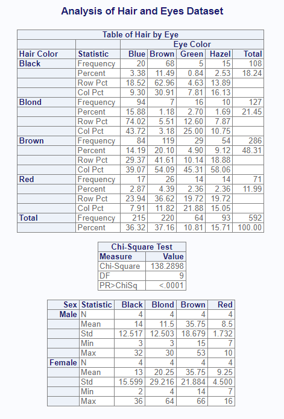

The procs package contains functions that replicate procedures from SAS® software. The intention of the package is to ease transition to R adoption by providing SAS® programmers a familiar conceptual framework and functions that produce nearly identical output. Along the way, the functions in the procs package also provide much nicer output than many R statistical functions.
Key Functions
The package includes the following functions:
-
proc_freq(): A function to simulate the FREQ procedure. -
proc_means(): A function to simulate the MEANS or SUMMARY procedure. -
proc_transpose(): A function to pivot data similar in syntax to the TRANSPOSE procedure. -
proc_sort(): A function to sort and dedupe datasets. -
proc_print(): A quick-print function to send procedure results to the viewer or a report.
How to Use
Frequency Statistics
The proc_freq() function generates frequency statistics
in a manner similar to SAS® PROC FREQ. You can request one-way and
two-way frequency tables using the tables parameter.
Frequencies may be weighted using the weight parameter.
Simply pass the name of the variable that contains the weighted values.
There are many options to control the output data and display.
Note that the options("procs.print" = FALSE) global
option has been added to these examples to allow the
procs package to pass CRAN checks. When running sample
code yourself, remove this option or set to TRUE.
library(procs)
# Turn off printing for CRAN checks
options("procs.print" = FALSE)
# Prepare sample data
dt <- as.data.frame(HairEyeColor, stringsAsFactors = FALSE)
# Assign labels
labels(dt) <- list(Hair = "Hair Color",
Eye = "Eye Color")
# Produce frequency statistics
res <- proc_freq(dt, tables = v(Hair, Eye, Hair * Eye),
weight = Freq,
output = report,
options = chisq,
titles = "Hair and Eye Frequency Statistics")When printing is allowed, the proc_freq function will
display the following report in the viewer:
The function call requested output datasets using the “report” option. If there is more than one output dataset, they will be returned in a list. The output dataset list can be seen below:
# View output datasets
res
# $Hair
# CAT N CNT PCT CUMSUM CUMPCT
# 1 Black 592 108 18.24324 108 18.24324
# 2 Blond 592 127 21.45270 235 39.69595
# 3 Brown 592 286 48.31081 521 88.00676
# 4 Red 592 71 11.99324 592 100.00000
#
# $Eye
# CAT N CNT PCT CUMSUM CUMPCT
# 1 Blue 592 215 36.31757 215 36.31757
# 2 Brown 592 220 37.16216 435 73.47973
# 3 Green 592 64 10.81081 499 84.29054
# 4 Hazel 592 93 15.70946 592 100.00000
#
# $`Hair * Eye`
# CAT Statistic Blue Brown Green Hazel Total
# 1 Black Frequency 20.000000 68.000000 5.0000000 15.000000 108.00000
# 2 Black Percent 3.378378 11.486486 0.8445946 2.533784 18.24324
# 3 Black Row Pct 18.518519 62.962963 4.6296296 13.888889 NA
# 4 Black Col Pct 9.302326 30.909091 7.8125000 16.129032 NA
# 5 Blond Frequency 94.000000 7.000000 16.0000000 10.000000 127.00000
# 6 Blond Percent 15.878378 1.182432 2.7027027 1.689189 21.45270
# 7 Blond Row Pct 74.015748 5.511811 12.5984252 7.874016 NA
# 8 Blond Col Pct 43.720930 3.181818 25.0000000 10.752688 NA
# 9 Brown Frequency 84.000000 119.000000 29.0000000 54.000000 286.00000
# 10 Brown Percent 14.189189 20.101351 4.8986486 9.121622 48.31081
# 11 Brown Row Pct 29.370629 41.608392 10.1398601 18.881119 NA
# 12 Brown Col Pct 39.069767 54.090909 45.3125000 58.064516 NA
# 13 Red Frequency 17.000000 26.000000 14.0000000 14.000000 71.00000
# 14 Red Percent 2.871622 4.391892 2.3648649 2.364865 11.99324
# 15 Red Row Pct 23.943662 36.619718 19.7183099 19.718310 NA
# 16 Red Col Pct 7.906977 11.818182 21.8750000 15.053763 NA
# 17 Total Frequency 215.000000 220.000000 64.0000000 93.000000 592.00000
# 18 Total Percent 36.317568 37.162162 10.8108108 15.709459 100.00000
#
# $Chisq
# Measure Value
# 1 Chi-Square 1.382898e+02
# 2 DF 9.000000e+00
# 3 PR>ChiSq 2.325287e-25Summary Statistics
The proc_means() function calculates summary statistics,
similar to the SAS® PROC MEANS procedure. The variable or variables to
generate statistics for is passed on the var parameter. The
class parameter tells the function to group results by the
indicated variable. The by parameter will subset the data
according to the distinct by values. Note that any class groupings are
nested in the by.
# Perform calculations
res2 <- proc_means(dt, var = Freq,
class = Hair,
by = Sex,
titles = "Hair and Eye Summary Statistics by Sex")The following is sent to the viewer:

And here is the output dataset. Observe that the output dataset is not identical to the displayed report. The output dataset has been optimized for data manipulation, while the displayed report has been optimized for viewing:
# View the summary statistics
res2
# BY CLASS TYPE FREQ VAR N MEAN STD MIN MAX
# 1 Female <NA> 0 16 Freq 16 19.5625 20.713824 2 66
# 2 Female Black 1 4 Freq 4 13.0000 15.599145 2 36
# 3 Female Blond 1 4 Freq 4 20.2500 29.216149 4 64
# 4 Female Brown 1 4 Freq 4 35.7500 21.884165 14 66
# 5 Female Red 1 4 Freq 4 9.2500 4.500000 7 16
# 6 Male <NA> 0 16 Freq 16 17.4375 16.008201 3 53
# 7 Male Black 1 4 Freq 4 14.0000 12.516656 3 32
# 8 Male Blond 1 4 Freq 4 11.5000 12.503333 3 30
# 9 Male Brown 1 4 Freq 4 35.7500 18.679311 15 53
# 10 Male Red 1 4 Freq 4 8.5000 1.732051 7 10Notice that the output data contains breakouts by class and summaries by group. The summaries by group are identifed by rows where TYPE = 0. The breakouts by class are TYPE = 1. In other words, rows 1 and 6 provide summary statistics for the by groups FEMALE and MALE, while the other rows provide statistics for each class category.
Also note that both proc_freq() and
proc_means() output datasets follow the convention of
naming columns according to the statistic or parameter they represent.
This convention is somewhat different from SAS®, but makes it easier to
manipulate the output data.
Other Functions
While the main focus of the procs package is on
statistical procedures, the output from these procedures is often
manipulated to produce a more desirable result. Some additional
functions have been added to the procs package that
SAS® programmers will be familiar with: proc_transpose(),
proc_sort(), and proc_print().
Continuing from the example above, let’s take some additional steps to produce a little report:
library(fmtr)
# Filter and select using subset function
res3 <- subset(res2, TYPE != 0, c(BY, CLASS, N, MEAN, STD, MIN, MAX))
# Transpose statistics
res4 <- proc_transpose(res3, id = CLASS, by = BY, name = Statistic)
# View transformed data
res4
# BY Statistic Black Blond Brown Red
# 1 Female N 4.00000 4.00000 4.00000 4.000000
# 2 Female MEAN 13.00000 20.25000 35.75000 9.250000
# 3 Female STD 15.59915 29.21615 21.88416 4.500000
# 4 Female MIN 2.00000 4.00000 14.00000 7.000000
# 5 Female MAX 36.00000 64.00000 66.00000 16.000000
# 6 Male N 4.00000 4.00000 4.00000 4.000000
# 7 Male MEAN 14.00000 11.50000 35.75000 8.500000
# 8 Male STD 12.51666 12.50333 18.67931 1.732051
# 9 Male MIN 3.00000 3.00000 15.00000 7.000000
# 10 Male MAX 32.00000 30.00000 53.00000 10.000000
# Assign factor to BY so we can sort
res4$BY <- factor(res4$BY, levels = c("Male", "Female"))
# Sort male to top
res5 <- proc_sort(res4, by = BY)
# BY Statistic Black Blond Brown Red
# 6 Male N 4.00000 4.00000 4.00000 4.000000
# 7 Male MEAN 14.00000 11.50000 35.75000 8.500000
# 8 Male STD 12.51666 12.50333 18.67931 1.732051
# 9 Male MIN 3.00000 3.00000 15.00000 7.000000
# 10 Male MAX 32.00000 30.00000 53.00000 10.000000
# 1 Female N 4.00000 4.00000 4.00000 4.000000
# 2 Female MEAN 13.00000 20.25000 35.75000 9.250000
# 3 Female STD 15.59915 29.21615 21.88416 4.500000
# 4 Female MIN 2.00000 4.00000 14.00000 7.000000
# 5 Female MAX 36.00000 64.00000 66.00000 16.000000
# Create formatting list
fmt <- flist(STD = "%.3f", type = "row", lookup = res5$Statistic)
# Create vector lookup
vf <- c(MEAN = "Mean", STD = "Std", MEDIAN = "Median",
MIN = "Min", MAX = "Max")
# Assign formats
formats(res5) <- list(Statistic = vf,
Black = fmt,
Blond = fmt,
Brown = fmt,
Red = fmt)
# Reassign first column name
names(res5)[1] <- "stub"
# Assign labels
labels(res5) <- list(stub = "Sex")
# Create list for reporting
prnt <- list(res$`Hair * Eye`, res$Chisq, res5)
# Print result
proc_print(prnt,
titles = "Analysis of Hair and Eyes Dataset",
view = FALSE) # Set view = TRUE to see results
If desired, we could print this report to the file system using the
file_path and output_type parameters on
proc_print().